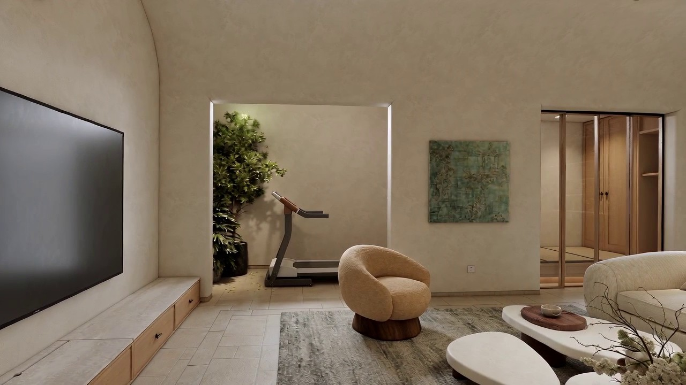
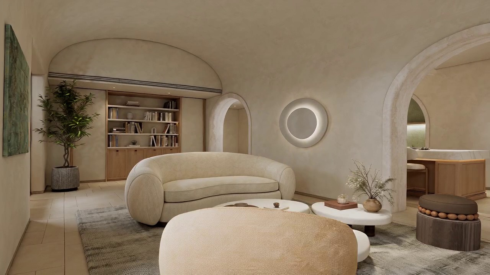
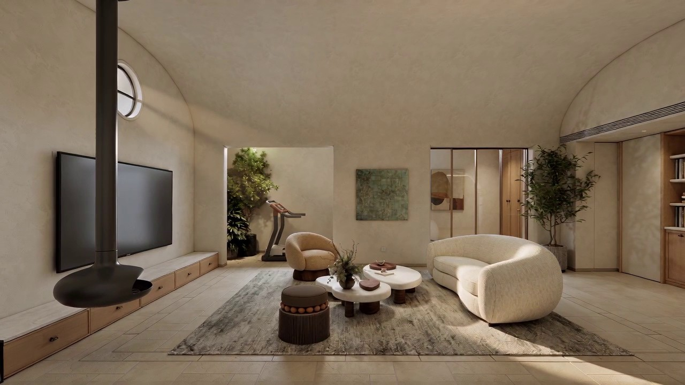
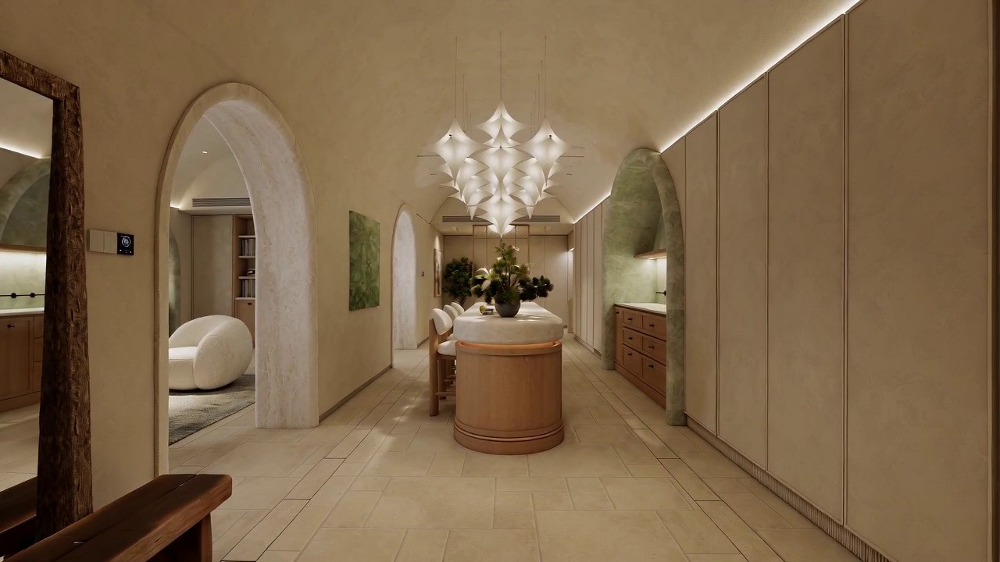

ALL WORKS
FILM 01 07 SHANGHAI CHINA
Tomson Junpin
汤臣君品TYPE
Film / Interior
LOCATION
Shanghai / China
SCOPE
Film / Art Direction
DURATION
00:33
A house held in stillness
Curved plaster walls arch into one another / the living room reads as a single soft volume / light moves across linen stone and a sculptural pendant
The film follows the house without narration / a low sofa a round table a branch in a vase / each object is given time
We designed the interior and the pace of the film together / the camera walks the same quiet route as the plan
CURVEPLASTERLIGHTSTILLNESS
Design notes
FILM NOTES 03A single curve
Ceiling and wall meet in one continuous line / the room has almost no sharp corners
Light as material
A circular pendant and a narrow skylight bring the day inside
Quiet furniture
Rounded pieces sit low / they leave the centre of the room open



